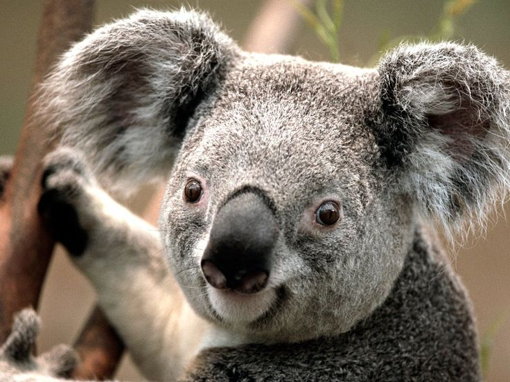
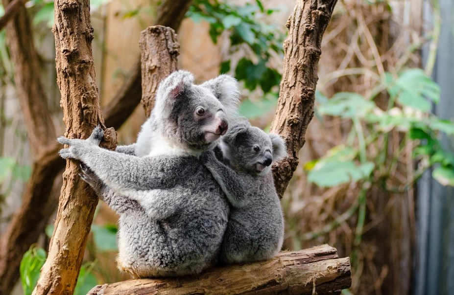

Слово коала (англ. koala) происходит от даракского[en] слова gulawan или его укороченной формы gula. Первоначальную транскрипцию cullawine постепенно вытеснил вариант koola. Хотя гласная /u/ была первоначально написана в английской орфографии как «оо», она, возможно по ошибке, была изменена на «oa». Ошибочно считалось, что это слово означало «не пьёт»
В целом коалы похожи на вомбатов (их ближайших родственников), но имеют более густой мех (мягкий и толщиной 2—3 см), более крупные уши и более длинные конечности. У коалы есть большие острые когти, помогающие ей с хождением по стволам деревьев. Вес коалы варьируется от примерно 5 кг у небольшой самки с севера до около 14 кг у крупного самца с юга.
Конечности коал приспособлены к лазанью. Кисть передней лапы имеет 2 отставленных в сторону «больших» пальца (по-английски: thumbs), имеющие две фаланги, которые противостоят трем остальным обычным пальцам (англ. fingers), с тремя фалангами, расположенными вдоль кисти. Называть второй палец коалы указательным не совсем корректно, ибо он выглядит так же, как и первый, то есть «большой» палец. Все пальцы передних лап завершаются прочными когтями. Всё это позволяет животному эффективно обхватывать ветви деревьев, замыкая кисть в надёжный замок, а молодому коале цепко держаться за шерсть матери. При этом напомним, что коала и спит в таком положении, а при случае может и повисеть на одной лапе.
Коалы населяют эвкалиптовые леса, почти всю жизнь проводят в кронах этих деревьев. Днём коала спит, устроившись на ветке или в развилках ветвей; ночью лазает по деревьям, отыскивая корм. Даже если коала не спит, он обычно часами сидит совершенно неподвижно, обхватив ветку или ствол дерева передними лапами. Коала неподвижна 16—18 часов в сутки. По земле он передвигается не очень хорошо и потому спускается вниз только для перехода на новое дерево, до которого не может допрыгнуть. Прыгают коалы с дерева на дерево на удивление ловко и уверенно; спасаясь бегством, эти обычно медлительные и флегматичные звери переходят на энергичный галоп и быстро взбираются на ближайшее дерево. Умеют плавать.
